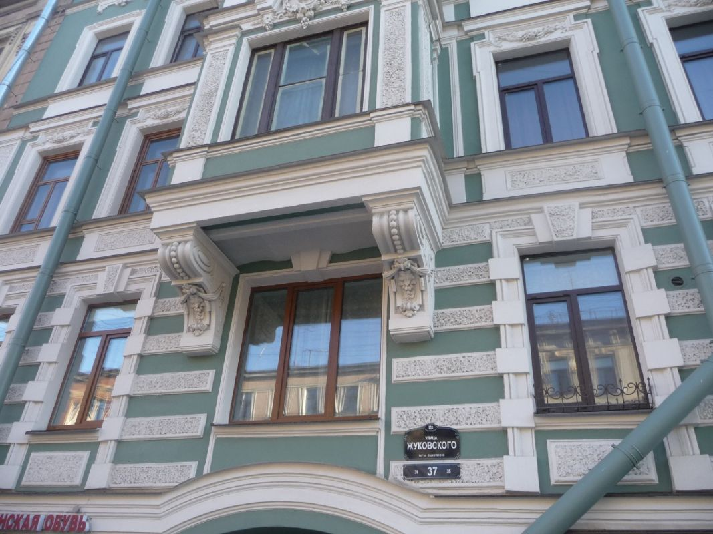
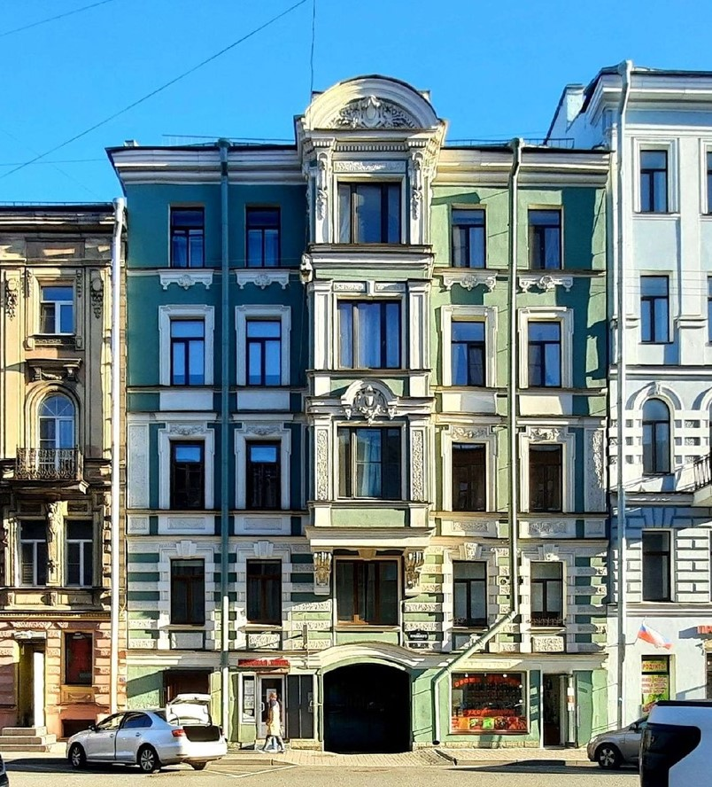
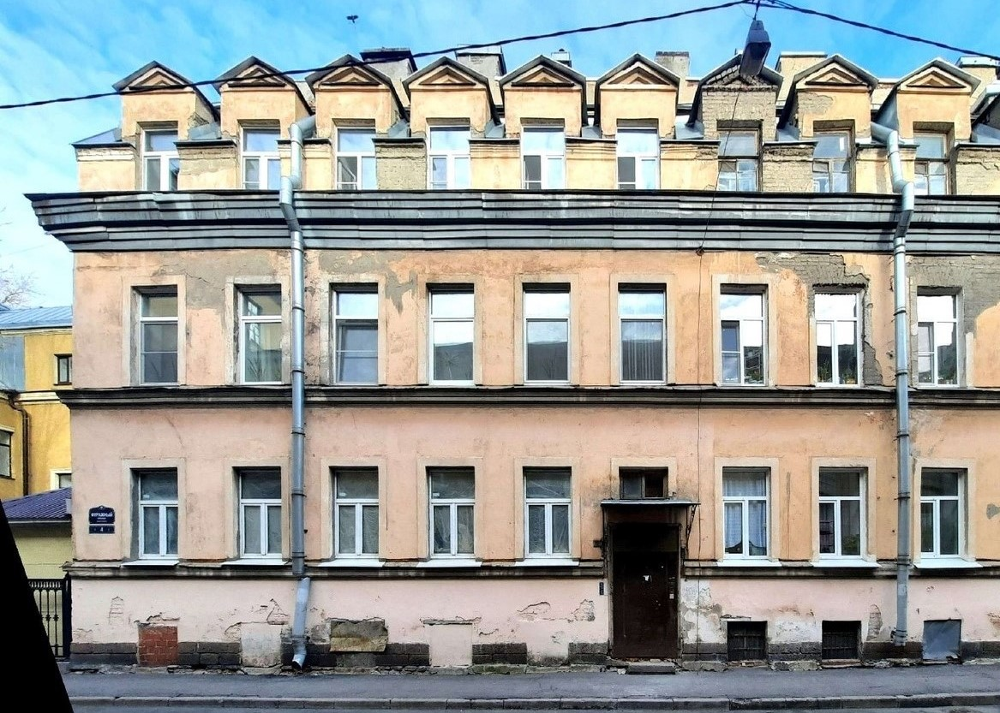
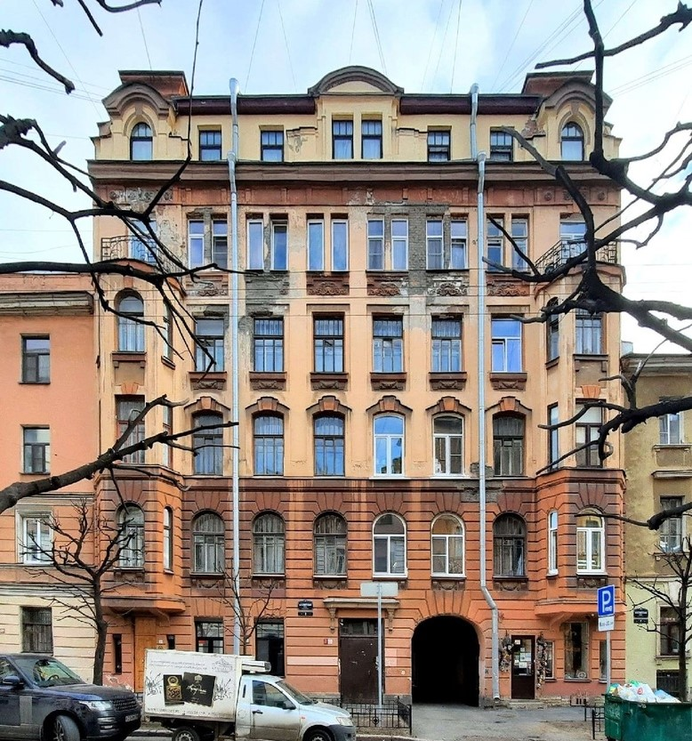

Выполняем реконструкцию и капитальный ремонт жилых и коммерческих зданий, включая сложные объекты старого фонда. Берём на себя весь процесс — от демонтажа до ввода в эксплуатацию.
О компании
Компания работает на строительном рынке Санкт-Петербурга с 2000 года. Основное направление — реконструкция и капитальный ремонт зданий.
Реализуем проекты различной сложности: от отдельных видов работ до полной реконструкции объектов с заменой конструкций и инженерных систем.
Среди заказчиков — государственные учреждения, коммерческие организации и частные собственники.

Направления работ
Полная реконструкция зданий: демонтаж, усиление конструкций, замена перекрытий, восстановление планировок.
Электрика, водоснабжение, канализация, отопление — полная замена и модернизация.
Черновая и чистовая отделка помещений.
Ремонт кровли, усиление несущих элементов, работа с перекрытиями.
Ремонт и восстановление фасадов с учётом архитектурных требований.
Полный цикл: от обследования до сдачи объекта.
Реализованные проекты
Ул. Миллионная, д. 11 — 2021
Полная реконструкция здания: демонтаж внутренних конструкций, замена межэтажных перекрытий, устройство новых инженерных систем, черновая и чистовая отделка. Фактически выполнено воссоздание внутреннего объёма при сохранении внешних стен.

Ул. Жуковского, д. 37 — 2022
Капитальный ремонт жилого дома без расселения. Работы велись в условиях проживания: замена инженерных систем, ремонт парадных и фасада, поэтапная организация процесса.

Фуражный пер., д. 4 — 2023
Комплексный капитальный ремонт административного здания: усиление конструкций, полная замена инженерных сетей, восстановление фасада и внутренних помещений.

6-я Советская ул., д. 9 — 2024
Реконструкция верхнего этажа с заменой перекрытий и полной перестройкой внутренних помещений. Работы выполнены с сохранением архитектурного облика здания.
Почему выбирают нас
Мы работаем с понятными сроками и прозрачной сметой. Основной принцип — выполнить проект так, чтобы заказчику не приходилось контролировать каждый этап.
Более 20 лет работы с реконструкцией и капитальным ремонтом зданий.
Планирование и контроль выполнения работ на каждом этапе.
Опыт работы с государственными и муниципальными объектами.
Гарантийные обязательства на выполненные работы.
Собственные специалисты и проверенные подрядчики.
Понятная смета и контроль всех затрат.
Как мы работаем
Выезд на объект, оценка состояния здания и предварительное определение объёма работ.
Инструментальное обследование несущих конструкций и инженерных систем, архивные изыскания, фотофиксация.
Разработка проектной и рабочей документации. Согласование в КГИОП и иных надзорных органах при необходимости.
Детальный расчёт стоимости, согласование графика платежей, подписание договора с фиксацией сроков и гарантий.
Производство реставрационных и строительных работ. Еженедельная отчётность для заказчика, авторский надзор.
Подготовка исполнительной документации, сдача объекта с подписанием актов. Постгарантийное сопровождение.
Контакты
Свяжитесь с нами или оставьте заявку. Обсудим объект и подскажем возможные решения.
Адрес офиса
Санкт-Петербург,
ул.
Телефон
+7 (123) 456-78-90
Электронная почта
info@example.ru
Режим работы
Пн–Пт, 9:00–18:00